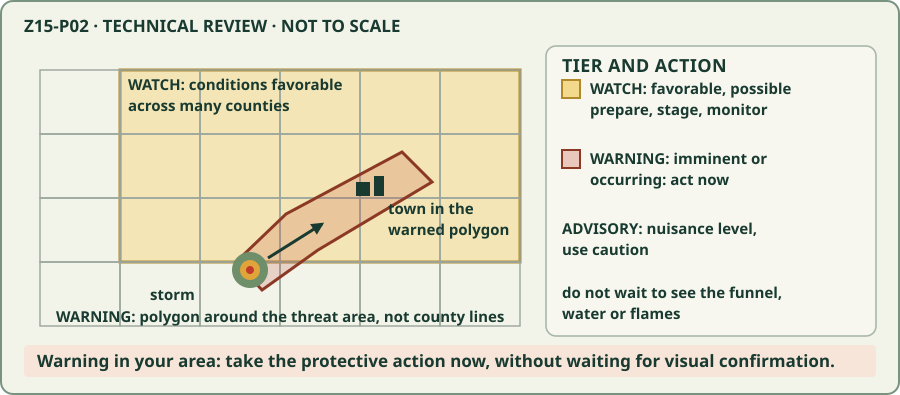

Z15-P02 · Disaster scenarios · New manuscript
Distinguish Watch, Warning, Advisory, and Emergency alert tiers cleanly
Match household urgency accurately to official NWS and emergency-management alert language so action starts early without confusion.
When it applies · Severe thunderstorm, tornado, flash flood, blizzard, ice storm, extreme heat, and wildfire alerts.
Equipment · NOAA Weather Radio, smartphone WEA, and written household Watch-vs-Warning action triggers.

Actions
- Treat a WATCH (conditions are favorable for dangerous weather to develop across the area) as your PREPARE & STAGE trigger: finish fuel/supply staging, charge batteries, monitor live updates closely, cancel exposed outdoor travel, and verify shelter readiness.[T16, D03, D01]
- Treat a WARNING (hazardous weather or flooding is imminent or ALREADY OCCURRING in your warned polygon) as your ACT IMMEDIATELY trigger: move straight to lowest interior shelter (tornado), high ground (flash flood), or off roads (blizzard) without waiting to look outside.[T16, D03, D05]
- Treat an EMERGENCY tier (Tornado Emergency, Flash Flood Emergency, Evacuation Order) as an extreme life-threatening rare escalation demanding maximum immediate protective action or mandatory departure.[D03, D05, D14]
Failure recognition · Confusing a Tornado Warning with a Watch and stepping onto the porch to film dark clouds instead of moving immediately to the basement.[D03, T16]
Verify · Confirm every adult and older child knows Watch = prepare/monitor and Warning = act NOW without visual confirmation.[T16, D03]
Stop or change course · Never wait to see a funnel cloud, wall of water, or flames before executing Warning-level protective actions.[D03, D05, D08]
Evidence and editorial notes
- D01 · FEMA / Ready.gov · Be Informed and Multi-Hazard Preparedness (current web edition)
- Section: Be Informed > Local Hazard Assessment, Alerts, and Jurisdiction Mapping · Conditions: Households preparing for regional multi-hazard emergencies
Support: Identify specific local hazards, sign up for county/municipal opt-in alerts alongside WEA/EAS and NOAA Weather Radio, know official evacuation zone labels, and review household plans twice yearly.
Limitations: Emergency warning systems, siren policies, and shelter locations vary strictly by county and municipality. · Conflicting evidence: None; aligns with T14 and T15.
Editorial note: Establishes jurisdiction-specific alert and planning baseline in Z15. · Specialist reviewer: Emergency management specialist
Primary source · checked 2026-11-24 - D03 · National Weather Service · Tornado Safety: During a Tornado (Current web edition)
- Section: During a Tornado: at home, outside or in a vehicle · Conditions: Tornado warning; options depend on location and flood danger
Support: Use a sturdy building’s lowest suitable interior area when possible. Mobile homes and overpasses are unsafe. Follow the vehicle or outdoor last-resort branch if sturdy shelter cannot be reached.
Limitations: A low outside spot is conditional on safe access and absence of flood danger. Follow local alerts. · Conflicting evidence: See A02 claim audit for boundaries.
Editorial note: Core tornado shelter-selection and post-storm hazard evidence in Z15. · Specialist reviewer: Meteorology and emergency management
Primary source · checked 2026-11-25 - D05 · FEMA / Ready.gov · Floods (current web edition)
- Section: Floods: During; Turn Around, Don’t Drown · Conditions: Flooded roads or trails, flood alert, or post-flood re-entry
Support: Move to safe higher ground when directed, never walk or drive into floodwater, and respect closures and re-entry restrictions.
Limitations: Depth examples are warning illustrations, never safe entry thresholds. Trapped or submerged vehicles require emergency help and scene-specific response. · Conflicting evidence: See A02 claim audit for boundaries.
Editorial note: Core flood evacuation, water-avoidance, and safe re-entry evidence. · Specialist reviewer: Emergency management and flood hydrology
Primary source · checked 2026-11-24 - D08 · FEMA / Ready.gov · Wildfires (current web edition)
- Section: Stay safe during wildfire; evacuate when directed · Conditions: Wildfire threat with local warning and evacuation system
Support: Plan to leave early and follow official open routes and local evacuation orders. Return only when allowed.
Limitations: Ready–Set–Go is one local vocabulary. Vehicle staging is editorial and does not justify delay after a warning. · Conflicting evidence: See A02 claim audit for boundaries.
Editorial note: Grounds wildfire evacuation readiness and route-abort decisions. · Specialist reviewer: Wildland fire management and emergency services
Primary source · checked 2026-11-24 - D14 · FEMA / Ready.gov · Evacuation (current web edition)
- Section: Before, during and after evacuation · Conditions: Official evacuation or a preplanned, safely accessible departure
Support: Prepare a go-kit, routes, transport and a contact plan. Follow official routes and use the locally indicated registration or reunification channel.
Limitations: Shelter accessibility and animal accommodations require local and ADA guidance; no fixed national website is assumed. · Conflicting evidence: See A02 claim audit for boundaries.
Editorial note: Core evacuation execution and accountability evidence in Z15. · Specialist reviewer: Emergency management and transportation safety
Primary source · checked 2026-11-24 - T16 · NWS · Flood Safety (current web edition)
- Section: Flood Watches and Warnings; Turn Around Don’t Drown · Conditions: U.S. flood alerts and routes crossing moving or standing floodwater
Support: Use the local flood alert wording and follow directions to move to safer higher ground. Never drive around a barricade or enter a flooded route.
Limitations: Stages, timing and detours depend on event and locality; no observable safe crossing depth. · Conflicting evidence: See A02 claim audit for boundaries.
Editorial note: Clarifies Watch vs Warning decision thresholds in Z01 scenarios. · Specialist reviewer: Emergency management and meteorology
Primary source · checked 2026-11-24
Source lineage · NWS Flood/Tornado Safety and Ready.gov; new manuscript · Classification · New manuscript.